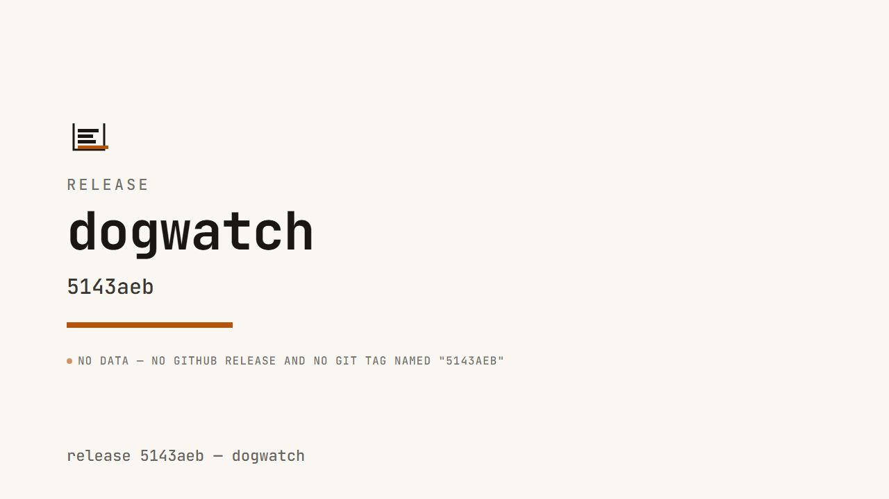
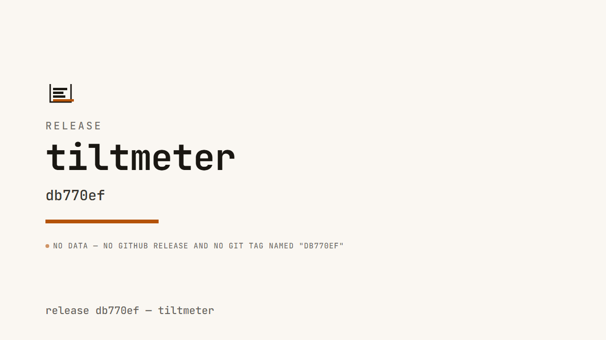

The release notes nobody reads, replaced by a
40-second video from data your CI already emits.
A CLI plus one Remotion
template that renders a repo's real commits, real GitHub release metadata, and real
CI test counts into a branded release video. Nothing on screen is typed by a human —
every figure traces to git, the GitHub releases API, or a facts.json
artifact the target repo's own CI produced, and every source is labeled on screen.
A real render, not a mockup
galley render --repo dogwatch --from 478fcbb --to 5143aeb --facts facts.json
dogwatch's real CI-fix release arc (5 commits, 1 contributor, 29 files changed), a real
facts.json from a real vitest run
(243/246 passing), rendered straight from dogwatch's own git log.
1280×720, 36s, 913KB, no audio track.
Same pipeline, two more real repos


Neither range has a matching GitHub release or git tag (both repos dogfood without tagging releases), so both posters show the title card's honest "no data — no GitHub release and no git tag named…" beat instead of a guessed date — the degrade-honestly path (death condition D3), exercised for real, not just in a test.
Quickstart
# build once npm install npm run build # render a video from a real repo's real release range node dist/cli/index.js render \ --repo /path/to/some/repo \ --from v1.0.0 --to v1.1.0 \ --out release.mp4 # same data, one still frame node dist/cli/index.js poster \ --repo /path/to/some/repo \ --from v1.0.0 --to v1.1.0 \ --out release.png # prints the CI step that generates facts.json from a real test run node dist/cli/index.js facts init
Optional on render/poster:
--brand brand.json,
--facts facts.json,
--reduced-motion (render only — poster always renders the
static variant). Full CLI surface: docs/SPEC.md.
Why every number is real
- git — commit count, authors, sampled messages, files-changed
stats: extracted straight from
git log/git diff --shortstatagainst the target repo. Always available, no network. - GitHub release metadata — title/date/notes via
gh api repos/{owner}/{repo}/releases. Optional, requires network; degrades honestly to git tag metadata (then to an explicit "no data" beat) rather than guessing. - facts.json — a small schema'd artifact the target repo's own CI
emits (test counts, coverage, up to two custom facts).
galley facts initprints the CI step that generates it. Invalid facts are rejected outright, never partially rendered.